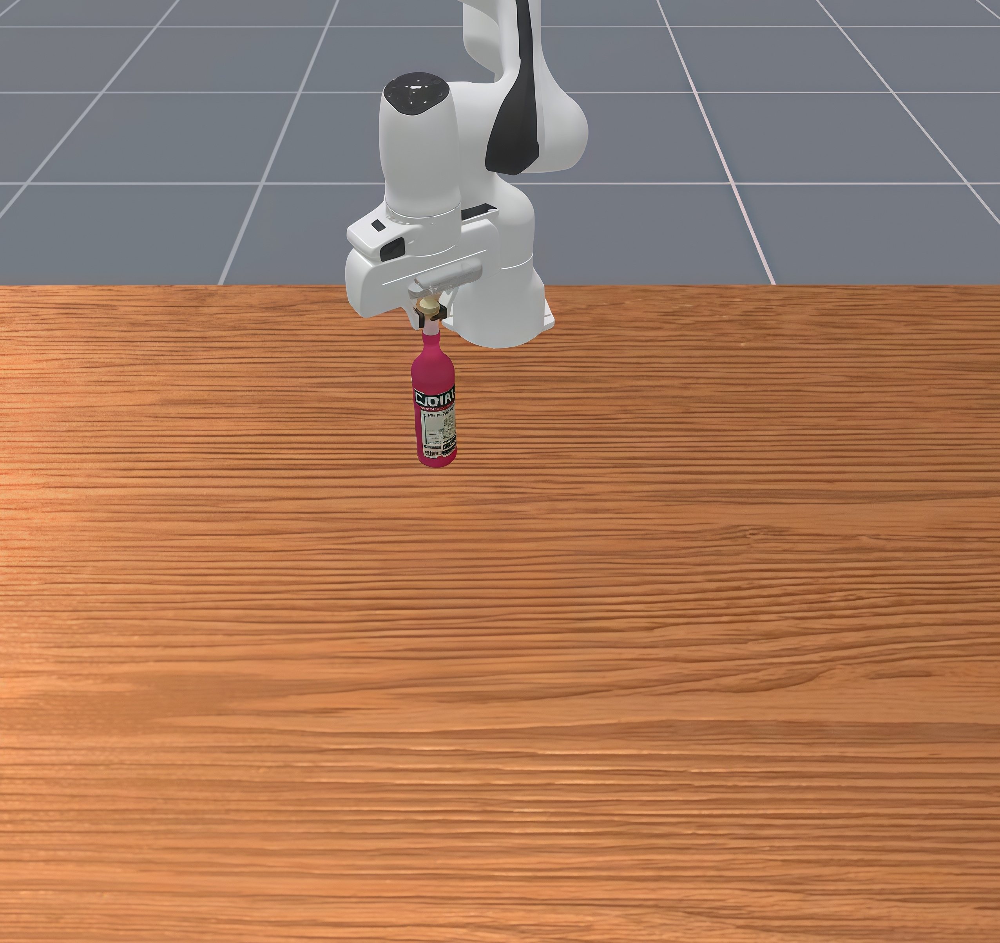
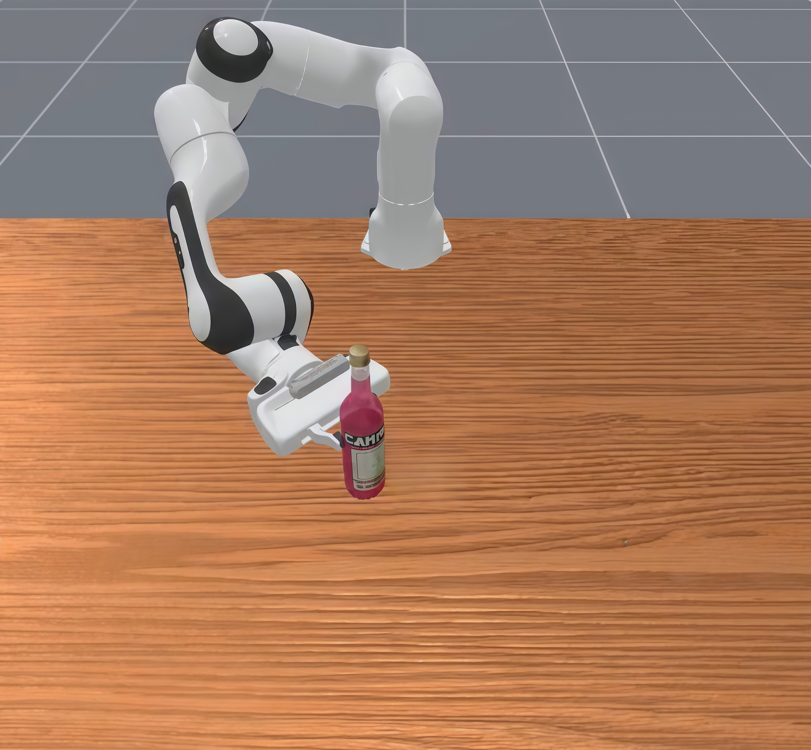
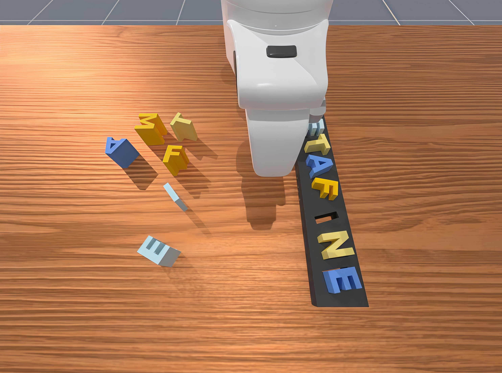
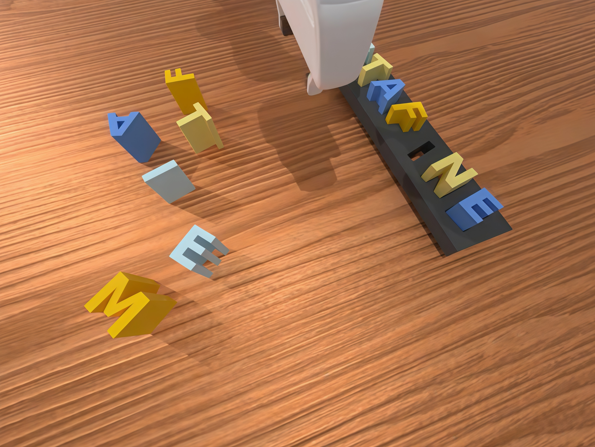
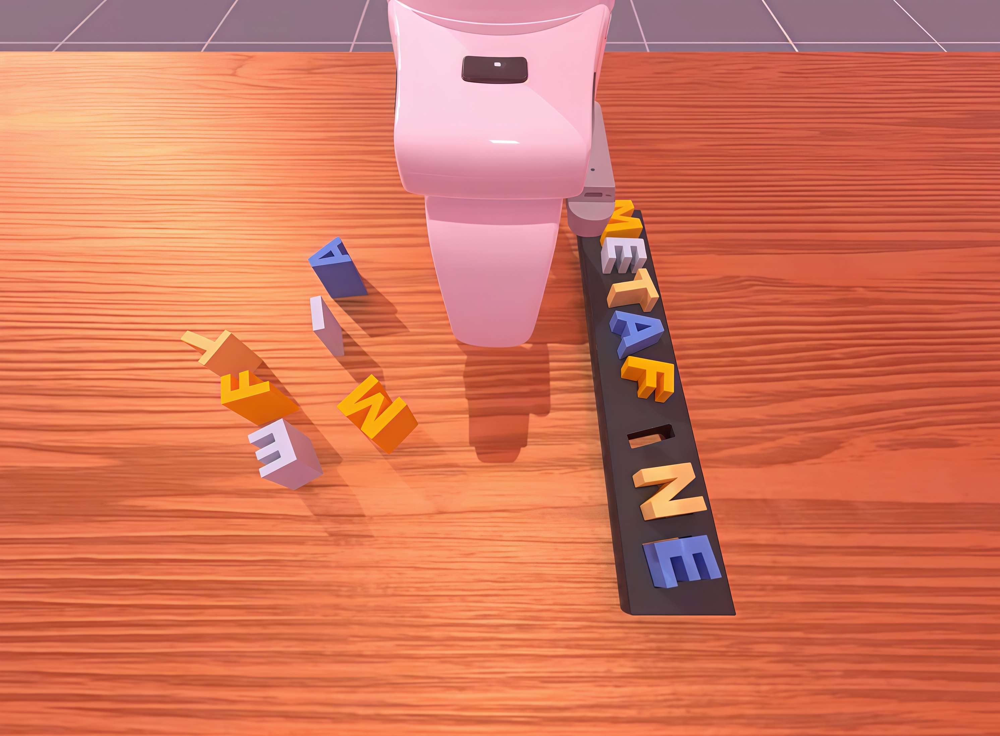
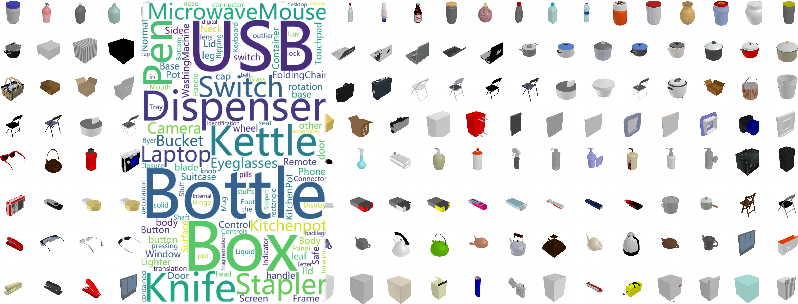
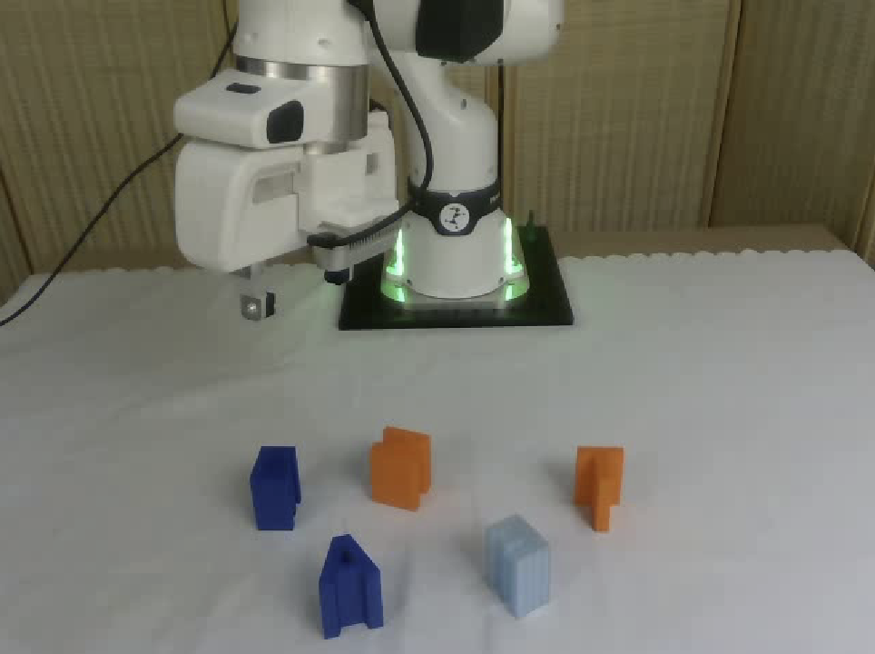
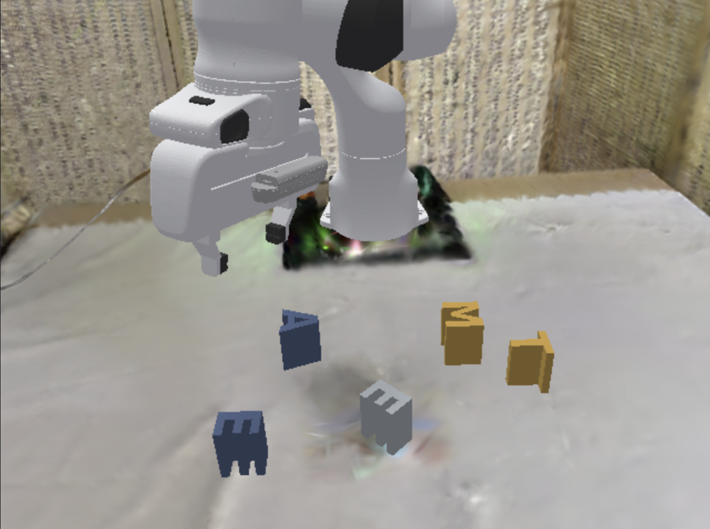
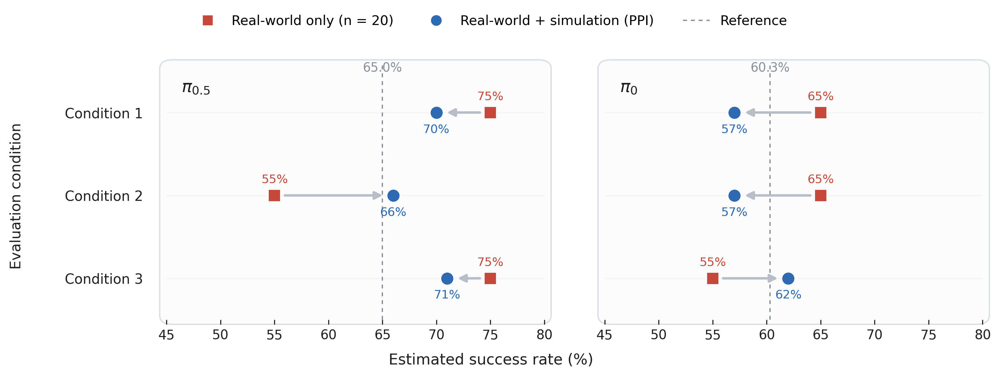

three axes
Three-dimensional diagnosis
Disentangle manipulation into understanding, perception, and behavior instead of collapsing everything into binary success.
A diagnostic compass, not just a benchmark.
MetaFine is a diagnostic evaluation framework for fine-grained robotic manipulation. Rather than collapsing manipulation into a single binary success rate, MetaFine disentangles policy capability into three fundamental dimensions — understanding, perception, and behavior — and reveals the hidden failure modes that conventional benchmarks miss. Built on a compositional task graph and an extensible asset library, MetaFine can generate diverse fine-grained tasks, absorb heterogeneous benchmarks, and support both simulation-based diagnosis and hybrid real–sim evaluation. By turning evaluation from a leaderboard into a tool for scientific diagnosis, MetaFine provides the infrastructure needed to measure, understand, and ultimately improve genuine physical dexterity.
MetaFine is a diagnostic framework for fine-grained robotic manipulation. It moves beyond binary success rates to reveal hidden failures in understanding, perception, and behavior, enabling unified evaluation across benchmarks, simulation, and the real world.
Disentangle manipulation into understanding, perception, and behavior instead of collapsing everything into binary success.
Compose fine-grained tasks from atomic skills, scale to thousands of part-aware assets, and absorb heterogeneous external benchmarks under a single diagnostic formalism.
Surface dimension-specific failure modes — semantic grounding gaps, visual encoder ceilings, and action-head trade-offs — translating aggregate scores into actionable design insights.
Combine scalable simulation with limited real-world rollouts for more stable performance estimation under scarce hardware budgets.
MetaFine decomposes robotic manipulation into three complementary axes — enabling researchers to identify not only whether a policy fails, but exactly where and why it fails.
Probe whether models understand fine-grained semantic instructions, such as selecting a different part of the same object, rather than replaying memorized routines.


Probe whether policies preserve precise part-level perception at close range, under both geometric perturbations in viewpoint and pose and photometric perturbations in lighting and color.



Behavior is measured through stage-wise success and trajectory smoothness, revealing whether policies can both progress through long-horizon tasks and execute controlled motions.
MetaFine builds tasks bottom-up from two reusable building blocks — atomic skill primitives and a part-aware asset library — enabling structured task generation, benchmark absorption, and scalable diagnostic coverage.
Each task is a graph: nodes are atomic skills (grasp-part, align, insert, rotate-along, slide, press-part, toggle-part) and edges encode dependencies. Paths through the graph define tasks of arbitrary complexity, enabling structured absorption of external benchmarks under a single formalism.
MetaFine ships with a part-annotated object library and rapid annotation tooling. Assets plug directly into the task graph, and external benchmarks are absorbed under the same compositional formalism for unified diagnostic comparison.

We cannot build what we cannot measure.
Policies that appear strong under binary benchmarks often fail once part-level semantic and physical constraints are enforced. Under disentangled evaluation, agents scoring 85% on conventional benchmarks can drop to 40%, revealing that binary success often conflates lucky completion with genuine fine-grained skill.
Semantic grounding is governed more by how a model is trained than by how large it is. End-to-end policies often conflate language with visual priors, whereas modular architectures better preserve fine-grained instruction-following under attribute-level semantic changes.
Fine-grained manipulation depends on whether the encoder can resolve precise part-level spatial structure. When spatial fidelity is insufficient, downstream action generation cannot recover the missing information, making visual resolution an absolute ceiling on manipulation precision.
Robustness is not a single property. Geometric robustness is tied primarily to encoder spatial representations, while photometric robustness depends more strongly on modality-level invariance and pretraining diversity, exposing distinct failure sources under visual change.
Deterministic action generation produces stable but rigid trajectories, while stochastic generation offers more diverse corrections but is more vulnerable to accumulated spatial drift. Fine-grained execution therefore depends not only on control smoothness, but also on how different action paradigms propagate perceptual uncertainty.
Small-batch hardware evaluation is inherently noisy and can misrepresent true policy performance. By calibrating large-scale simulation with a limited set of paired real rollouts, hybrid real–sim evaluation produces estimates that are substantially more stable and more faithful to real-world capability.
MetaFine integrates 3D Gaussian Splatting-based real-to-sim transfer with prediction-powered inference. A small number of paired real-world rollouts calibrates large-scale simulation — enabling stable, reproducible estimates of true policy performance under limited hardware budgets.



@inproceedings{metafine2026,
title = {MetaFine: Diagnosing Fine-Grained Robotic Manipulation Beyond Binary Success},
author = {Author One and Author Two and Author Three and others},
booktitle = {Venue (placeholder)},
year = {2026},
url = {https://metafine.example.org}
}